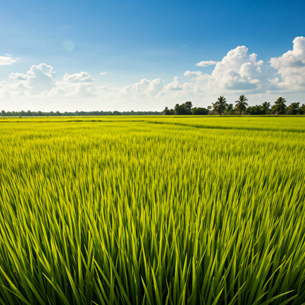
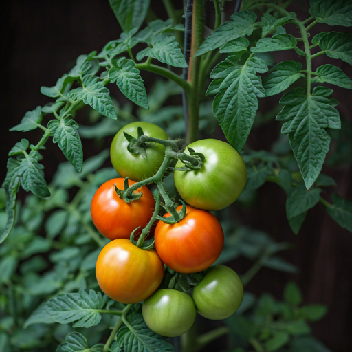

作物选择
3 类常用作物
计划工具
种植安排与阶段任务管理
提供面积测算、计划生成和任务进度查看，方便根据当前农事安排快速使用。
当前模块
包含计划生成、结果展示、任务推进和完成状态反馈。
计划生成
种植计划计算器
选择作物并输入面积后，页面会生成一份基础种植安排，脚本逻辑保持不变。
适合快速整理基础安排，也便于把结果作为展示型信息模块直接放进页面。
推荐计划：6 亩水稻
预计种苗准备：18 份
预计基础管理：12 天
预计展示亮点：重点练习节水灌溉和水位观察
根据当前安排切换水稻、玉米或番茄，保留原来的计算方式。
系统会自动根据面积换算基础准备数量和管理周期。
推荐计划、种苗数、管理天数和展示亮点会同步更新。
任务推进
实践任务进度条
按顺序完成阶段任务时，页面会自动更新当前进度与提示文案。
-
01
完成土地观察 先了解地块状态，为后续安排打好基础。
-
02
完成灌溉安排 结合天气和作物状态，合理安排浇水时间。
-
03
完成生长记录 记录作物变化，方便后续对比和经验整理。
-
04
完成展示总结 把重点内容整理出来，形成完整的阶段小结。
当前进度：25%
继续努力。

Rice
水稻计划概览
适合展示节水灌溉、水位观察与阶段记录，便于快速说明本轮作业重点。

Tomato
番茄计划概览
适合强调搭架、浇水、成熟观察和阶段成果，让展示内容更清晰直观。

Corn
玉米计划概览
适合展示地块分区、株行距管理和阶段巡查，帮助说明一轮任务推进节奏。